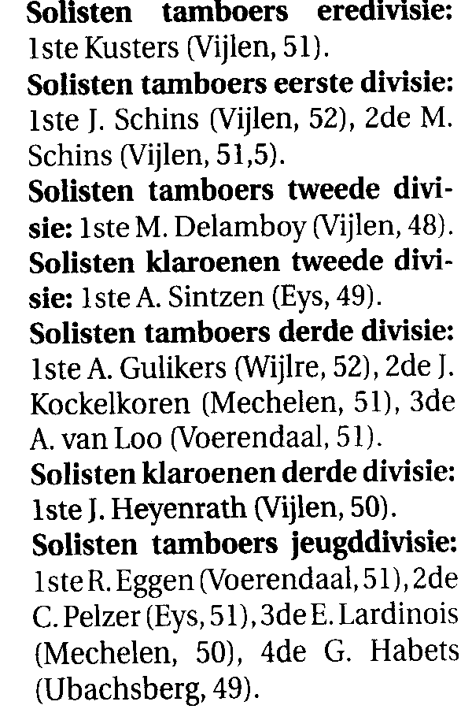
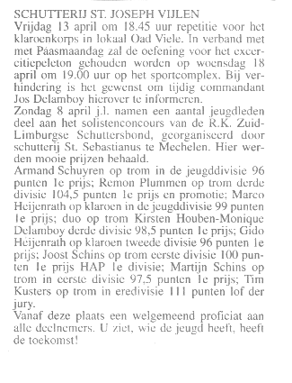
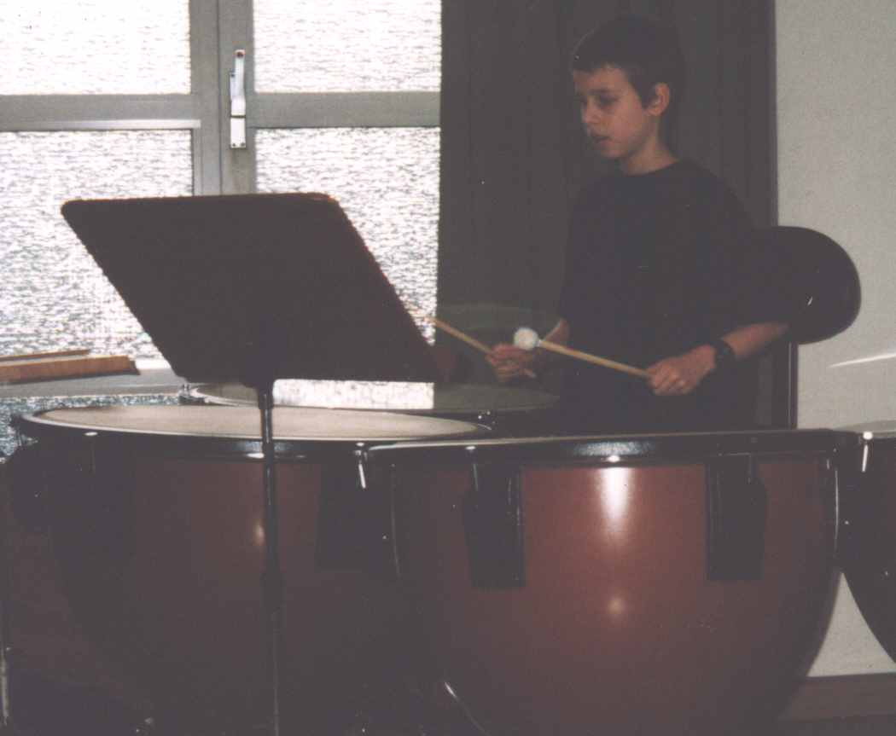
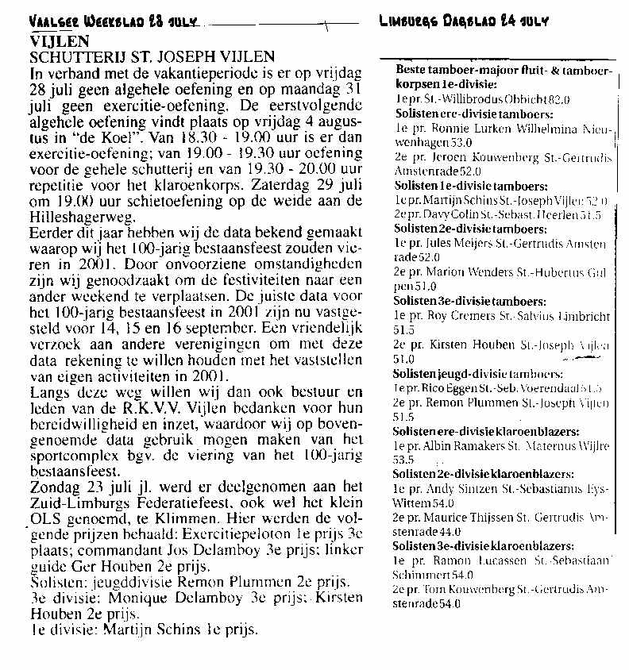
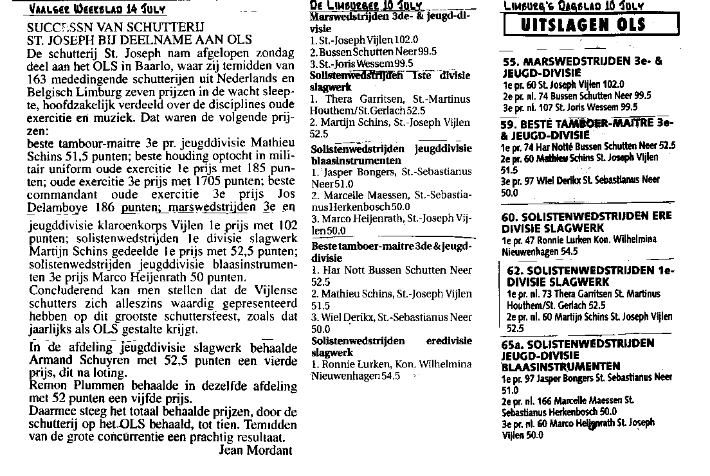
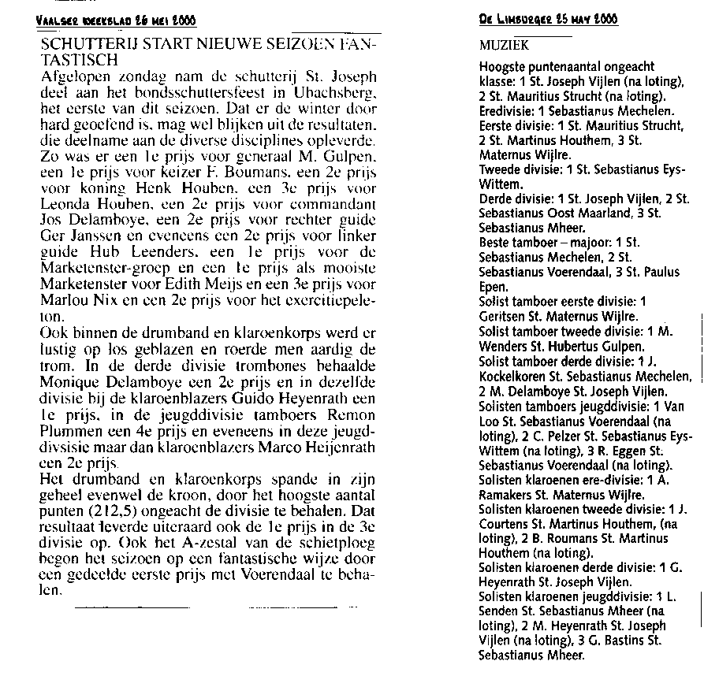
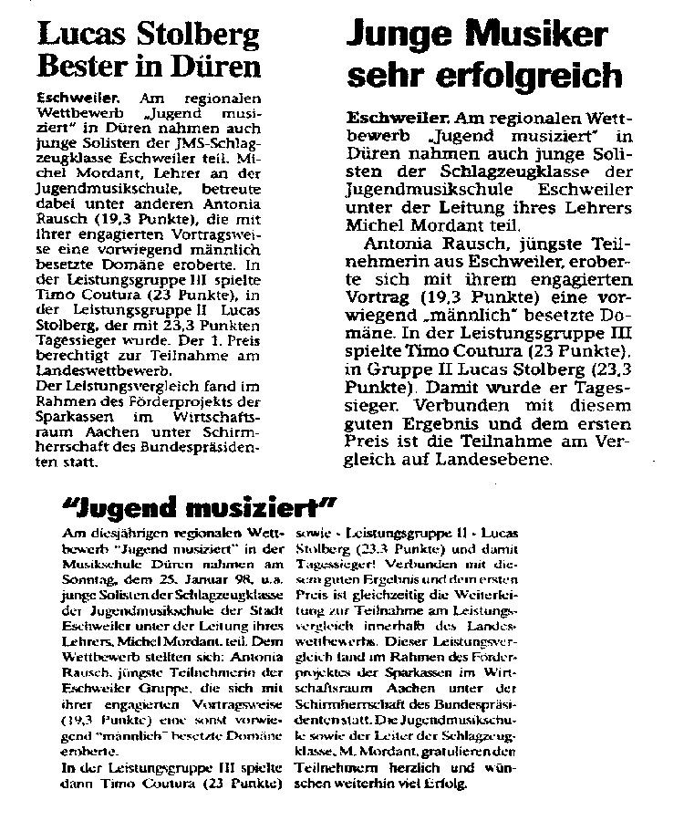

Mijn leerlingen
Resultaten van leerlingen
Drie decennia concoursresultaten: Limburgse en Nederlandse kampioenen, prijswinnaars bij Jugend Musiziert, en solisten en ensembles die werden onderscheiden in Nederland, Duitsland, België en Frankrijk.
Concourssystemen
Hoe concoursen worden ingedeeld
Zes afdelingen
- Jeugdafdeling (t/m 12 jaar)
- Derde afdeling
- Tweede afdeling
- Eerste afdeling
- Afdeling uitmuntendheid
- Ere-afdeling
Leeftijdsgroepen
- Leeftijdsgroep 1a — t/m 8 jaar
- Leeftijdsgroep 1b — 8 tot 10
- Leeftijdsgroep 2 — 11 tot 12
- Leeftijdsgroep 3 — 13 tot 14
- Leeftijdsgroep 4 — 15 tot 16
- Leeftijdsgroep 5 — 17 tot 18
- Leeftijdsgroep 6 — 19 tot 20
- Leeftijdsgroep 7 — 20 tot 28
Twee leeftijdsgroepen
- Leeftijdsgroep 1 — t/m 14 jaar
- Leeftijdsgroep 2 — 14 tot 19
Resultaten
Jaar voor jaar
Punten zijn uitgedrukt ten opzichte van het maximum van het betreffende concours. ‘In samenwerking met’ duidt op leerlingen die ook les kregen van een andere docent.
- 2026
Jugend Musiziert — Regionalwettbewerb, Aken, 31 januari · Drumstel (pop)
- Felix (leeftijdsgroep 5) — 24/25 punten: 1e prijs en prijswinnaar, door naar het Landeswettbewerb
- Jonas (leeftijdsgroep 2) — 23/25 punten: 1e prijs en prijswinnaar
- Fynn (leeftijdsgroep 3) — 23/25 punten: 1e prijs en prijswinnaar, door naar het Landeswettbewerb
- Alex (leeftijdsgroep 2) — 20/25 punten: 2e prijs
Jugend Musiziert — Preisträgerkonzert, Aken, 27 februari
Uitnodiging voor Felix Labedzki: improvisatie op drumstel.
Jugend Musiziert — Landeswettbewerb, Dortmund, 21 maart PDF
- Felix — 23/25 punten
- Jonas — 23/25 punten
- Fynn — 21/25 punten
Wedstrijdprogramma’s 2026
Leerling Leeftijdsgroep Programma Tijdcategorie Duur Eschweiler Jonas Lamm 2 Dance the Drums 1 (M. Mordant); Rocksolo 4 (H. Mennens); Welcome to the… (Guns N’ Roses) 6–10 min. 10:20 Fynn Krahl 3 Fynn’s Favourite (M. Mordant); Funksolo 3 (H. Mennens); Numb (Linkin Park) 10–15 min. 10:41 Felix Labedzki 5 Crazy Army (E. Lemley / S. Gadd); Dance the Drums 2 (M. Mordant); Feeling Good (Michael Bublé); Improvisatie (F. Labedzki) 15–20 min. 18:15 Gangelt Alexander Foti 2 Rocksolo 3 (H. Mennens); Dancing the Drums 3 (M. Mordant); Starlight (Muse) 6–10 min. - 2025
Jugend Musiziert — Regionalwettbewerb, Jülich, 1 februari · Mallets
- Jonas (leeftijdsgroep 1b) — 24/25 punten: 1e prijs en prijswinnaar
- Fynn (leeftijdsgroep 2) — 24/25 punten: 1e prijs en prijswinnaar, door naar het Landeswettbewerb
- Alex (leeftijdsgroep 1b) — 24/25 punten: 1e prijs en prijswinnaar
- Felix (leeftijdsgroep 4) — 24/25 punten: 1e prijs en prijswinnaar, door naar het Landeswettbewerb
- Burkhard (leeftijdsgroep 4) — 22/25 punten: 1e prijs
- Tobias (leeftijdsgroep 4) — 22/25 punten: 1e prijs
Jugend Musiziert — Preisträgerkonzert, Aken, 21 februari
- Jonas — marimba: Miniature for Marimba (Michel Mordant)
- Felix — drumstel: New Era (Felix Labedzki)
Jugend Musiziert — Landeswettbewerb, Essen, 24 maart PDF
- Fynn — 21/25 punten
- Felix — 21/25 punten
Wedstrijdprogramma’s 2025
Leerling Leeftijdsgroep Programma Tijdcategorie Duur (min.) Eschweiler Jonas Lamm 1b Marimba: Eli Green’s Cakewalk (S. Koninsky); klokkenspel: Menuet (J. S. Bach); marimba: Miniature for Marimba (M. Mordant); marimba: Pirates of the Caribbean (H. Zimmer) 6–10 min. 7 19/30 Fynn Krahl 2 Kleine trom: Ranec (J. Zinzen); drumstel: Rocksolo 4 (H. Mennens); set-up: Set-Up Solo 1 (M. Mordant); kleine trom: Try It (F. Rademakers) 6–10 min. 7 1/6 Burkhard Vogt 4 Marimba: Solo 3 (R. Wiener); vibrafoon: Für Elise (L. van Beethoven); marimba: Triad Dimension (M. Mordant); marimba: Alla Turca (W. A. Mozart) 15–20 min. 12 3/4 Felix Labedzki 4 Drumstel: Signature (S. Fink); set-up: Jeroen (F. Rademakers); kleine trom: Back in Town (M. Mordant); drumstel: New Era — improvisatie 15–20 min. 15 11/12 Tobias Frank 4 Marimba: Marimba Piece 1 (R. Wiener); marimba: Yellow After the Rain (M. Peters); vibrafoon: Diphtongue (M. Mordant); marimba: Furioso and Waltz (E. Hatch) 15–20 min. 16 2/5 Gangelt Alexander Foti 1b Xylofoon: Ententanz (N. J. Živković); klokkenspel: Double Up (M. Mordant); xylofoon: Minuet (Petzold); xylofoon: Cryptus (Mobers) 6–10 min. - 2015
- ‘Best Of’-concert Eschweiler — programma (PDF)
- Nederlandse kampioenschappen, 2e divisie, xylofoon sectie: Jeroen van der Poel
- 2014
- Jugend Musiziert — Regionalwettbewerb, Aken, 25 januari: David (leeftijdsgroep 2) — 24/25 punten, 1e prijs en prijswinnaar
- Jugend Musiziert — Landeswettbewerb, Essen, 14 maart: David (leeftijdsgroep 2) — 21/25 punten PDF
- Mausbach: workshop ‘Trommelzeichen zu heutigen Noten’ PDF
- Maasniel: workshops 1 en 2 PDF
- 2013
Sabbatical.
- 2012
- 2011
- World Music Contest (WMC), solistenconcours: Daan Westra en Jonas Germans PDF
- 2010
Limburgse Bond van Tamboerkorpsen — Limburgse kampioenschappen, Roggel, 14 maart PDF
- 1e divisie, slagwerk duo: Martijn en Joost Schins (St. Joseph Vijlen) — Sticking 2-gether (M. Mordant), 90 punten Kampioen van Limburg
- 1e divisie, marimba solist: Stephan Geelen (Eendracht Dieteren) — Spanish Dance (K. Stensgaard), 89 punten Kampioen van Limburg
- 2e divisie, xylofoon/marimba duo: Bianca en Joyce Berkers — Tango per due (I. Weijmans) Kampioen van Limburg
Limburgse Bond van Tamboerkorpsen — Merkelbeek, 31 januari PDF
- 1e divisie, slagwerk duo: Martijn en Joost Schins (St. Joseph Vijlen) — Sticking 2-gether (M. Mordant), 93 punten Winnaar 1e divisie & concourswinnaar
- Jeugdafdeling: Celine Dodemont, bes-bugle (sectie B), in samenwerking met Marco Gulpen Winnaar jeugddivisie
- Jeugdafdeling: Jonas Germans, kleine trom, in samenwerking met Schins Winnaar jeugddivisie
Limburgse Bond van Tamboerkorpsen — Koningsbosch, 10 januari
- 1e divisie, xylofoon/marimba solist: Stephan Geelen (Drumband Fanfare Eendracht Dieteren) — Spanish Dance (Kai Stensgaard), 87 punten Winnaar 1e divisie
- 1e divisie, solist kleine trom: Stephan Geelen (Drumband Fanfare Eendracht Dieteren) — Back in Town (Michel Mordant), 87 punten Winnaar 1e divisie
- 2e divisie, xylofoon/marimba duo: Bianca en Joyce Berkers — Tango per due (I. Weijmans) Winnaar malletduo
- 4e divisie, drumstel: Niels Eberson — Drumsolo no. 1 (E. Lammers) Winnaar drumsolo
- 2009
Nederlandse kampioenschappen, Elburg, 3 oktober
- 2e divisie, xylofoon/marimba solist: Joyce Berkers (Drumband Schutterij St. Stephanus Dieteren) Nederlands kampioen
- 2e divisie, xylofoon/marimba solist: Bianca Berkers (Drumband Schutterij St. Stephanus Dieteren) — 2e plaats
- 2008
- Limburgse kampioenschappen, Merkelbeek (16 maart): Stephan Geelen (St. Stephanus Dieteren) — marimba solo Furioso and Valse, 2e afdeling, 88 punten Kampioen van Limburg
- Limburgse kampioenschappen, Merkelbeek (16 maart): Joost Schins (St. Joseph Vijlen) — 1e divisie kleine trom, 93 punten, 2e plaats video
- Maasbracht, 12 januari: Stephan Geelen (Drumband Schutterij St. Stephanus Dieteren) — 2e divisie xylofoon/marimba solist, 87 punten
- Heerlen, 21 januari: Judith Keulers (Drumband Harmonie St. David Voerendaal) — 2e divisie xylofoon/marimba solist, 85 punten video
- Jeugddivisie kleine trom: Niels Eberson en Jeroen van Buggenum (Drumband Fanfare Eendracht Dieteren) — 81 punten
- 2007
Nederlandse kampioenschappen, Elburg, 13 oktober
- Lars Bogie — kleine trom, 4e afdeling (in samenwerking met Henry Geelen) Nederlands kampioen
- Bianca en Joyce Berkers — kleine trom, jeugdafdeling (in samenwerking met Henry Geelen) Nederlands kampioen
- Stephan Geelen en Jeroen Janssen — duo kleine trom, 3e afdeling (in samenwerking met Henry Geelen) Nederlands kampioen
- Joost Schins — kleine trom, 2e afdeling; concoursstuk Sagitta (M. Mols) Nederlands kampioen
O.L.S. Nederweert — solistenwedstrijden eredivisie slagwerk
- 1. J. Schins (Sint Joseph Vijlen) — 90,00 punten
- 2. M. Schins (Sint Joseph Vijlen) — 85,00 punten
Limburgse kampioenschappen, Melick, 17–18 maart
- Martijn en Joost Schins (Vijlen) — duo kleine trom Dialogo (H. Schellekens), 1e afdeling, 87 punten Kampioen van Limburg
- Joost Schins (Vijlen) — solo kleine trom Sagitta (M. Mols), 2e afdeling, 90,5 punten Kampioen van Limburg
- Lars Bogie (St. Stephanus Dieteren) — solo kleine trom Expo (J. Stoffels), 4e afdeling, 87 punten Kampioen van Limburg
- Kevin Louvenberg (St. Stephanus Dieteren) — solo kleine trom First Concert (F. Rademakers), 5e afdeling, 87,5 punten Kampioen van Limburg
- Bianca en Joyce Berkers (St. Stephanus Dieteren) — duo kleine trom Marche and Dance (G. Bomhof), 5e afdeling, 90 punten Kampioen van Limburg
- Jeugddivisie duo kleine trom: Joyce en Bianca Berkers (Drumband Schutterij St. Stephanus Dieteren) — 86 punten
- 5e divisie solist kleine trom: Kevin Louvenberg (St. Stephanus Dieteren) — 87,5 punten, Limburgs kampioen 2007
- 5e divisie solist kleine trom: Melvin Schulpen (Drumband Schutterij St. Stephanus Dieteren) — 87 punten
- 5e divisie xylofoon/marimba solist: Eefje Claessen (Drumband Fanfare Eendracht Dieteren) — 87 punten
- 4e divisie solist kleine trom: Joyce Berkers (Drumband Schutterij St. Stephanus Dieteren) — 86 punten
- 3e divisie duo kleine trom: Stephan Geelen en Jeroen Janssen (Drumband Schutterij St. Stephanus Dieteren) — 90 punten
Voor het beste resultaat krijgen leerlingen daarnaast extra les van een ervaren slagwerker; voor St. Stephanus Dieteren is dat Henry Geelen.
Heerlen
- 4e divisie xylofoon/marimba solist: Judith Keulers (Drumband Harmonie St. David Voerendaal) — 83 punten
- 3e divisie multipercussie solist: Jasper Vliex (Drumband Harmonie St. David Voerendaal) — 85 punten
- 2e divisie solist kleine trom: Joost Schins (Schutterij St. Joseph Vijlen) — 88 punten
- 1e divisie duo kleine trom: Martijn en Joost Schins (Schutterij St. Joseph Vijlen) — 87 punten
- 2006
- Nederlandse kampioenschappen, Berlicum, 2 juni: Kevin Louvenberg — kleine trom, jeugdafdeling; concoursstuk Basic Game (L. Camp) Nederlands kampioen
- O.L.S. Stramproy, 3 juli: Joost Schins — 26 Rudimental Solo (H. van Boven), ere-afdeling, 90,5 punten
- Limburgse kampioenschappen, Kerkrade, 19 maart: Judith Keulers — marimba, Polka en Galopp (I. Weijmans), 5e afdeling, 91 punten Kampioen van Limburg
- Limburgse kampioenschappen, Kerkrade, 19 maart: Stephan Geelen — marimba, Polka en Galopp (I. Weijmans), 4e afdeling, 88 punten Kampioen van Limburg
- Limburgse kampioenschappen, Kerkrade, 19 maart: Martijn Schins — kleine trom, Sagitta (M. Mols), 2e afdeling, 89 punten — 2e van Limburg
- Limburgse Bond van Tamboerkorpsen, Heerlen, 22 januari: Luc Pieters — marimba, Starting Up (M. Mordant), jeugdafdeling, 83 punten
- Limburgse Bond van Tamboerkorpsen, Heerlen, 22 januari: Judith Keulers — marimba, Polka en Galopp (I. Weijmans), 5e afdeling, 87 punten DOC
- 2005
- Houthem, 21 augustus: Joost Schins — Golden Tricks (J. Schipper), ere-afdeling, 86,90 punten, 2e plaats
- Houthem, 21 augustus: Martijn Schins — Expression (C. Bertjens), ere-afdeling, 87,10 punten
- Federatiefeest Born, 17 juni: Joost Schins — Golden Tricks (J. Schipper), ere-afdeling, 53,5 punten
- Federatiefeest Born, 17 juni: Martijn Schins — Expression (C. Bertjens), ere-afdeling, 53 punten
- Zuidlimburgse Schuttersbond, Nieuwenhagen, 28 maart: Joost en Martijn Schins — Timing (Henk Smit), ere-afdeling, 176 punten Concourswinnaar
- Zuidlimburgse Schuttersbond, Nieuwenhagen, 28 maart: Joost Schins — Golden Tricks (J. Schipper), ere-afdeling, 175,5 punten Concourswinnaar solisten
- Zuidlimburgse Schuttersbond, Nieuwenhagen, 28 maart: Martijn Schins — Expression (C. Bertjens), ere-afdeling, 172,5 punten — 2e plaats solist
- Limburgse kampioenschappen, Grubbenvorst, 20 maart: Timo Coutura — marimba, Yellow After the Rain (M. Peters), 2e divisie sectie F/G Kampioen van Limburg
- Limburgse Bond van Tamboerkorpsen, Noorbeek, 1 februari: Roel Zimny — marimba, Furioso and Valse in D minor (E. Hatch) — winnaar 2e divisie sectie F/G
- Limburgse Bond van Tamboerkorpsen, Noorbeek, 1 februari: Timo Coutura — marimba, Yellow After the Rain (M. Peters), 2e divisie sectie F/G — 2e plaats
- OSC Baexem: Dion Lamkin — marimba, Starting Up (M. Mordant), 3e afdeling, 82 punten
- 2004
- Zuidlimburgse Schuttersbond, Simpelveld, 28 maart: Joost Schins — Blue Ribbon (H. Borrenberghs), ere-afdeling, 108 punten Concourswinnaar
- Zuidlimburgse Schuttersbond, Simpelveld, 28 maart: Joost en Martijn Schins — Dialogo (H. Schellekens), ere-afdeling, 106 punten Concourswinnaar ensembles
- Zuidlimburgse Schuttersbond, Simpelveld, 30 maart: Martijn Schins — 26 Rudimental Solo (H. van Boven), ere-afdeling, 105 punten — 3e plaats van het concours
- Limburgse kampioenschappen, Heel, 14 maart: Jasper Vliex — xylofoon, Yankee Land (M. Hoffman), 2e afdeling sectie F/G Kampioen van Limburg
- Limburgse Bond van Tamboerkorpsen, Heerlen, 1 februari: Tim Dirrix — marimba, Rosewood Blues (C. Delancy), ere-afdeling sectie F/G
- Limburgse Bond van Tamboerkorpsen, Heerlen, 1 februari: Judith Keulers — Wals in C (L. Claasen), jeugdafdeling sectie F/G
- 2003
- O.L.S. Kessenich (België), 6 juli: Martijn Schins — Golden Tricks (J. Schipper), ere-afdeling, 52,5 punten
- Zuidlimburgse Schuttersbond, Voerendaal, 30 maart: Martijn Schins — Golden Tricks (J. Schipper), ere-afdeling, 110 punten Concourswinnaar
- Zuidlimburgse Schuttersbond, Voerendaal, 30 maart: Joost Schins — Back in Town (M. Mordant), ere-afdeling, 108,5 punten — 3e plaats van het concours
- Solistenconcours (Z.L.S.F.), Voerendaal, 30 maart: Martijn en Joost Schins en Tim Kusters — Striking Back (M. Mordant), eerste afdeling, 109 punten — 2e plaats van het concours
- Limburgse kampioenschappen, Borgharen, 13 maart: Jasper Vliex — xylofoon, Polka en Galop (I. Weijmans), 3e afdeling sectie F/G Kampioen van Limburg
- 2002
- Zuidlimburgse Schuttersbond, Eys, 9 juni: Martijn Schins — kleine trom, Compilation March (G. Bomhof) en Expression (C. Bertjens), ere-afdeling
- Zuidlimburgse Schuttersbond, Eys, 9 juni: Remon Plummen — kleine trom, Three Dances (L. Camp), tweede afdeling
- Nederlandse kampioenschappen, Berlicum, 2 juni: Armand van Loo — xylofoon, 3e afdeling sectie F/G; concoursstuk Mars en Wals (I. Weijmans) Nederlands kampioen
- Solistenconcours (Z.L.S.F.), Ubachsberg, 4 april: Petra, Martijn en Joost Schins en Tim Kusters — Back to the Roots (M. Mordant), eerste afdeling, 104 van 120 punten
- Limburgse kampioenschappen, Melick, 13 maart: Armand van Loo — xylofoon, 3e afdeling sectie F/G; concoursstuk Wals in C (L. Claesen) Kampioen van Limburg
- L.B.T., Heerlen, 3 februari: Armand van Loo — xylofoon, Wals in C (L. Claesen), 3e afdeling sectie F/G
- L.B.T., Roggel, 19 januari: Ralf Linssen — kleine trom, My First Audition (M. Mordant), jeugdafdeling sectie A, 52 punten
- 2001
- Maria Habes solistenconcours (O.S.C.), Heel, 4 november: Tymen Abels — marimba, Solo Piece for Anaïs (Ruud Wiener), derde afdeling
- Maria Habes solistenconcours (O.S.C.), Heel, 4 november: Ayrton Spierts — kleine trom, Repetition March (Henk Mennens), jeugdafdeling
- Mons. Roncken Toernooi, Amstenrade, 23 september: Tijmen Abels — xylofoon, 3e afdeling
- Zuidlimburgse Schuttersbond, Wijlre, 19 augustus: Joost Schins (kleine trom, eerste afdeling), Tim Kusters (kleine trom, ere-afdeling), Gido Heijenrath (bes-bugle, derde afdeling), Monique Delamboy (kleine trom, tweede afdeling)
- Zuidlimburgse Schuttersbond, St. Geertruid, 17 juni: Martijn Schins (kleine trom, eerste afdeling), Tim Kusters (kleine trom, ere-afdeling), Gido Heijenrath (bes-bugle, derde afdeling), Remon Plummen (kleine trom, derde afdeling), Joost Schins (kleine trom, eerste afdeling)
- Kantonale Bond van Schutterijen “Eendracht Maakt Macht”, Buggenum: Ralf Naus — kleine trom, jeugdafdeling
- Kantonale Bond van Schutterijen “Eendracht Maakt Macht”, Roggel, 17 juni: Ralf Linssen — kleine trom, jeugdafdeling
- O.S.C., St. Odiliënberg, 10 juni: duo Juul Beckers en Timmy Coenen — slagwerk, jeugdafdeling, Exposition voor slagwerkduo (M. Mordant)
- Mons. Roncken Toernooi, Melick, 20 mei: Tijmen Abels — xylofoon, 3e afdeling
- Nederlandse kampioenschappen, Berlicum, 13 mei: Tim Dirrix — marimba, afdeling uitmuntendheid sectie F/G; concoursstuk Yellow After the Rain (M. Peters) Nederlands kampioen
- Nederlandse kampioenschappen, Berlicum, 13 mei: Roel Zimny — xylofoon, derde afdeling sectie F/G; concoursstuk Yankee Land (M. Hoffman) Nederlands kampioen
- Zuidlimburgse Schuttersbond, Mechelen, 8 april: Ron Lurken — kleine trom, ere-afdeling; concoursstuk Back in Town (M. Mordant) Concourswinnaar
- Zuidlimburgse Schuttersbond, Mechelen, 8 april: Joost Schins (kleine trom, eerste afdeling), Gido Heyenrath (bes-bugle, tweede afdeling), Remon Plummen (kleine trom, tweede afdeling), Armand van Loo (kleine trom, derde afdeling)
- 10e O.S.C., Baexem, 25 maart: Paul Venner — concerttoms, derde afdeling
- Limburgse Bond van Tamboerkorpsen, Landgraaf, 18 maart: Tim Dirrix — marimba, afdeling uitmuntendheid sectie F/G Kampioen van Limburg
- Limburgse Bond van Tamboerkorpsen, Landgraaf, 18 maart: Ron Lurken — kleine trom, afdeling uitmuntendheid sectie C Kampioen van Limburg
- Limburgse Bond van Tamboerkorpsen, Landgraaf, 18 maart: Roel Zimny — xylofoon, derde afdeling sectie F/G Kampioen van Limburg
- Limburgse Bond van Tamboerkorpsen, Heerlen, 11 februari: Tim Dirrix (marimba, afdeling uitmuntendheid F/G), Ron Lurken (kleine trom, afdeling uitmuntendheid C), Roel Zimny (xylofoon, derde afdeling F/G)
- Jugend Musiziert, Düren (Duitsland), 28 januari: Timo Coutura (leeftijdsgroep 4), Daniel Kupper (leeftijdsgroep 3), Stefan Hagel en Linda Mertes (leeftijdsgroep 2) — marimba, pauken, kleine trom en drumstel; Stefan speelde een paukensolo van J. McKenzie
- Gido en Marco Heijenrath
- Concert ‘Het Land van Ooit’, Drunen: Rafael Sars — kleine trom, bij de recordpoging ‘Het grootste symfonieorkest Ooit’, dirigent Henk Westbroek
- 2000
- Schuttersfeest Gulpen, 6 augustus: Monique Delamboy (kleine trom, derde afdeling, gepromoveerd naar tweede afdeling), Gido Heijenrath (bes-bugle, derde afdeling), Jan Willem Spobeck (kleine trom, jeugdafdeling)
- Federatiefeest Klimmen, 23 juni: Martijn Schins (kleine trom, eerste afdeling), Ronny Lurken (kleine trom, ere-afdeling), Remon Plummen (kleine trom, jeugdafdeling)
- Oud Limburgs Schuttersfeest, Baarlo: Martijn Schins (kleine trom, eerste afdeling), Ronny Lurken (kleine trom, ere-afdeling)
- Zuidlimburgse Schuttersbond, Nieuwenhagen, 18 juni: Marco Heijenrath (bes-bugle, jeugdafdeling), Gido Heijenrath (bes-bugle, derde afdeling)
- Zuidlimburgse Schuttersbond, Ubachsberg, 21 mei: Monique Delamboy (kleine trom, derde afdeling), Armand van Loo (kleine trom, jeugdafdeling), Marco Heijenrath (bes-bugle, jeugdafdeling), Gido Heijenrath (bes-bugle, derde afdeling)
- Ondeling Solisten Concours, St. Odiliënberg, 2 april: Kenneth Savelkoul — xylofoon, derde afdeling
- Zuidlimburgse Schuttersbond, Mheer, 26 maart: Joost Schins (kleine trom, derde afdeling), Gido Heijenrath (bes-bugle, derde afdeling), Remon Plummen (kleine trom, jeugdafdeling)
- Limburgse Bond van Tamboerkorpsen, Landgraaf, 13 februari: Tim Dirrix — xylofoon, eerste afdeling sectie F/G
- Limburgse Bond van Tamboerkorpsen, Melick, 31 januari: Michel Thomassen — kleine trom, jeugdafdeling sectie C
- 1999
- Ronnie Lurken — kleine trom: Zuidlimburgse Schuttersbond Meerssen (22 augustus, eerste afdeling), Houthem (8 augustus, eerste afdeling), Z.L.S.F. Susteren (18 juli, eerste afdeling), O.L.S. Reuver (4 juli, tweede afdeling), Wijlre (20 juni, eerste afdeling), Schin op Geul (30 mei, eerste afdeling), Valkenburg (28 maart, ere-afdeling)
- O.S.C. Heel, 25 april: Tymen Abels — xylofoon, jeugdafdeling
- O.S.C. Baexem, 28 maart: Ruud Joris — xylofoon, eerste afdeling
- Limburgse Bond van Tamboerkorpsen, Roggel, 21 maart: Tim Dirrix — xylofoon, tweede afdeling sectie F/G Kampioen van Limburg
- Limburgse Bond van Tamboerkorpsen, Roggel, 21 maart: Ronnie Lurken en Raymond Collaris — ensemble kleine trom, afdeling uitmuntendheid sectie C Kampioen van Limburg
- Limburgse Bond van Tamboerkorpsen, Heerlen, 31 januari: Ronnie Lurken en Raymond Collaris (ensemble kleine trom, ere-afdeling sectie C); Tim Dirrix (xylofoon, tweede afdeling sectie F/G)
- 1998
- Zuid Limburgs Federatiefeest, Valkenburg, 19 juli: Ronnie Lurken — kleine trom, eerste afdeling
- Oud Limburgs Schuttersfeest, Kinrooi (België), 5 juli: Ronnie Lurken — kleine trom, eerste afdeling
- S.E.C. Posterholt, 19 april: Rik van Bree — kleine trom, jeugdafdeling
- Zuidlimburgse Schuttersbond, Wijlre, 29 maart: Ronnie Lurken — kleine trom, eerste afdeling. Dit concours is vier keer gewonnen door oud-leerlingen (1992, 1993, 1995 en 1996).
- Limburgse Bond van Tamboerkorpsen, St. Geertruid, 21 maart: Tim Dirrix — xylofoon, Polka en Galop (I. Weijmans), derde afdeling sectie F/G Kampioen van Limburg
- Jugend Musiziert, Düren (Duitsland), 25 januari: Timo Coutura (leeftijdsgroep 3) en Lucas Stolberg (leeftijdsgroep 2) — xylofoon, pauken, kleine trom en drumstel
- Limburgse Bond van Tamboerkorpsen, Heerlen, 18 januari: Tim Dirrix — xylofoon, Polka en Galop (I. Weijmans), derde afdeling
- 1993t/m 1997
- Oud Limburgs Schuttersfeest, Kaulille (België), 6 juli 1997: Ronnie Lurken — kleine trom
- Vriendenkrans, Heel, 13 april 1997: Onno van de Ven — marimba, Cool Bite (W. Stadler), duet met Richard Steinbusch (vibrafoon)
- O.S.C. Merkelbeek, 1 april 1996: Geert Gebben — kleine trom, jeugdafdeling
- S.E.C. Posterholt, 24 maart 1996: Pierke Boosten — kleine trom, jeugdafdeling
- O.S.C. Doenrade, 2 april 1995: Stevie Gelissen (kleine trom, tweede afdeling) en Joep Larue (kleine trom, jeugdafdeling)
- Limburgse Bond van Tamboerkorpsen, Sittard, 14 maart 1993: Linda, Angelique en Carol Gubbels — kleine trom, derde afdeling sectie C
- Limburgse Bond van Tamboerkorpsen, Epen: Sanne Teheux — bes-bugle, jeugdafdeling sectie B Kampioen van Limburg
Archief
Krantenknipsels en documenten
Krantenartikelen, oorkonden en concoursdocumenten uit het leerlingenarchief.


Krantenknipsel, 20 augustus 2001

Krantenknipsel, 8 april 2001 Krantenknipsel, 20 maart 2001
Krantenknipsel, 20 maart 2001
 Jugend Musiziert 2001
Jugend Musiziert 2001


Stefan Hagel Marco en Gido Heijenrath
Marco en Gido Heijenrath
 Vaalser Weekblad, 11 augustus 2000
Vaalser Weekblad, 11 augustus 2000


Krantenknipsel, 24 juli 2000

De Limburger en Vaalser Weekblad, 10 juli 2000

De Limburger en Vaalser Weekblad, 25 mei 2000 Krantenknipsel, 27 maart 2000
Krantenknipsel, 27 maart 2000
 Krantenknipsel, 22 maart 1999
Krantenknipsel, 22 maart 1999
 Krantenknipsel, 29 maart 1998
Krantenknipsel, 29 maart 1998


Krantenknipsel, 28 februari 1997 Joost Schins, 2004
Joost Schins, 2004